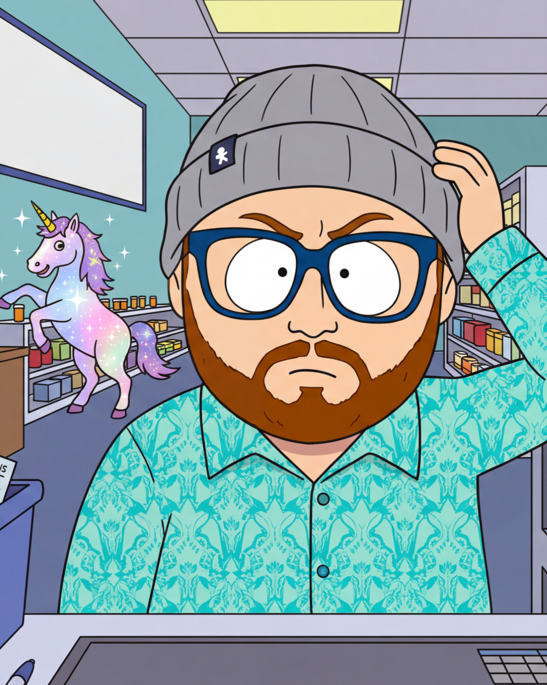

The Unit of One Movement

The Core Definition
A Unit of One is not merely "Single." The word "Single" is a vague, lazy categorization used by healthcare forms, applications, and service providers to dismiss our realities.
A Unit of One (U01) is an individual who cannot rely on a local support system for basic human survival. We are our own patient advocates, our own caretakers, our own chefs, and our own administrative assistants. We demand to be assessed based on our uncompromising realities, not systemic and societal assumptions.
The Crucible of Qualification
This status is forged in the fires of bureaucratic erasure. It is born the exact moment you realize the system assumes a safety net that does not exist.
The crucible is the daily, exhausting reality of navigating a world built for case numbers and couples, forcing the individual to become an unbreakable foundation of one just to survive the paperwork.
The Re-Classification
This is not a cult, and there is no rulebook dictating your autonomy.
The U01 Movement is a total binary re-classification. It is an aggressive restructuring of the modern healthcare and support-service landscape to shatter how service-based needs are assessed. It is the uncompromising demand that our dignity be preserved and recognized exactly as we deserve it to be.